【蒲郡線】
2026/10/06
概要
シルバーウイークに勉強から逃避行するのと、久々に中学校の友達（A・B）とあってカラオケに
行くはずだったのですが・・・友達Bが風邪が疑わしいとの連絡が・・・
さすがに男二人といえどカラオケはきついものがある、ということで協議を行った結果
小旅行的なものにしようとなりました。
友達にどこがいい？と聞くと「四日市」と返答が。
マジかと、嘘だろと。確かに近鉄は乗ってみたいけれども、流石に・・・と思い話し合うと
「ICカード使えないところ行きたいよね」と。
まだ（執筆時点では）記事を作ってはいないが廃線になるということで、
広見線新可児～御嵩間は乗車してるんですよね。
名鉄のIC非対応区間はあと一つ、そう蒲郡線です。なのでこれに乗ろうとなって話がまとまりました。
なので9/19に蒲郡線に乗ってまいりました。
使ったカメラはCanon EOS 70Dです。（友人の写真も含まれてます）
日程？前編
そんなこんなで3時に太田川駅に友達と集合。
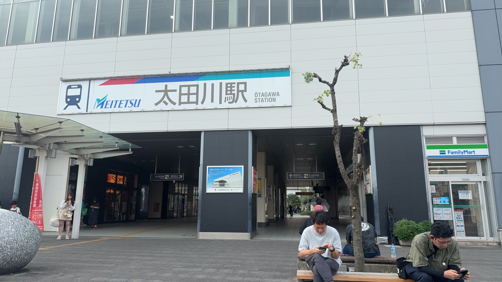
そしてそのまま電車に滑り込み神宮前にまで向かいました。 神宮前から乗換をして豊橋方面の急行に乗り込み新安城で下車、 さらに乗り変えして急行吉良吉田行きに。
（ここら辺って新安城とか北安城とか～安城の駅名多すぎですよね）
そして吉良吉田駅に到着、ここからが蒲郡線の始まりです。 まず、切符なりICなりを吉良吉田の改札？でチャックされます。 で私はICで行ったのですが改札で「どこまで？」 と聞かれ「蒲郡まで」と言うと処理をしてくれ紙がもらえます。 この紙を蒲郡の改札？で提出するわけですね。 というわけで蒲郡線にやってまいりました。
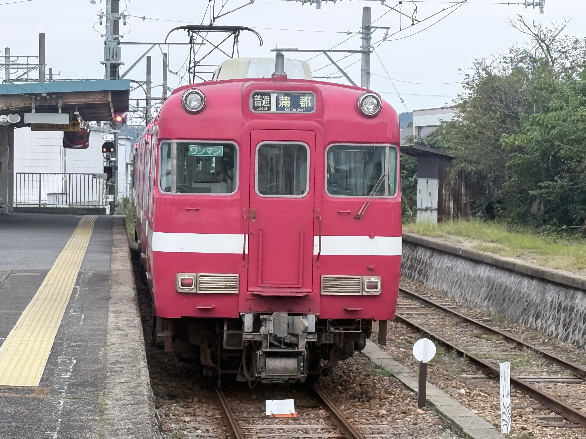
見るからに[古い]感じですね。実際この車両は古いらしいです。
（私、そこらへんはあんまり詳しくないんですよね―。 詳しくなりたいものですがねぇ・・）
蒲郡線とは？
そんなこんなで蒲郡線に揺られてゆきます。
で、どうせ無名路線、それも数多の赤字路線の中での全く光っていない路線を
敢えて県民として解説？していこうと思う。
元々、蒲郡線は三河鉄道により”三河線”として敷設された路線です。
名鉄との直通とかそこらへんが始まると西尾線と同一で運用されていたらしいです。
だから今でも愛称として”西蒲線”なんて呼ばれてるらしいです。
余談というか、蒲郡線はほんとはもっと西側に走っていた”三河線”とおんなじでした。
（図表としてこちら
の方を引用させていただきます。）
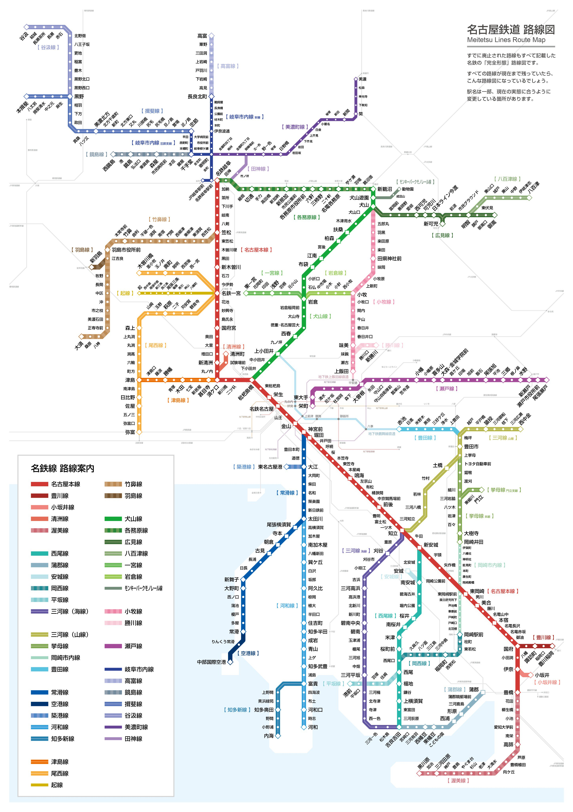
これは名鉄の廃線区間を含めた路線図なのですが三河湾沿岸に注目すると
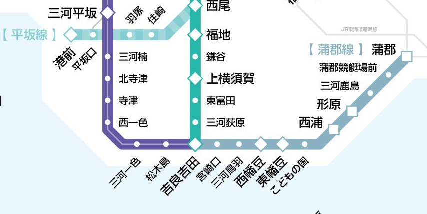
このように吉良吉田より西方面に路線があるのがわかります。
ちなみに現存する路線に絞ると
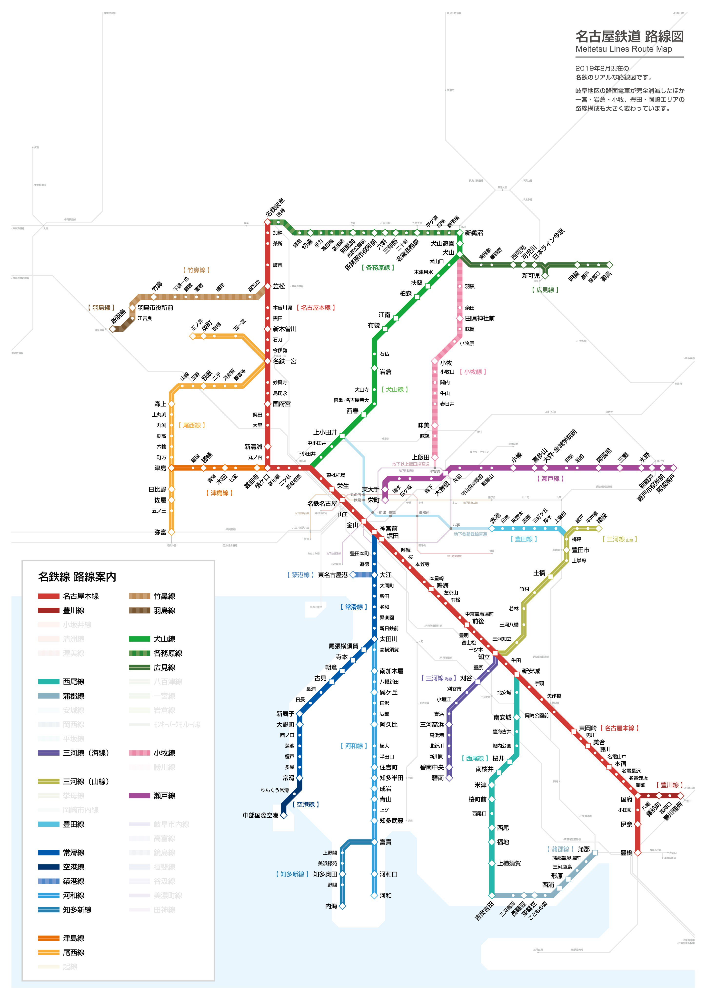
となります。 蒲郡線周辺に絞ると
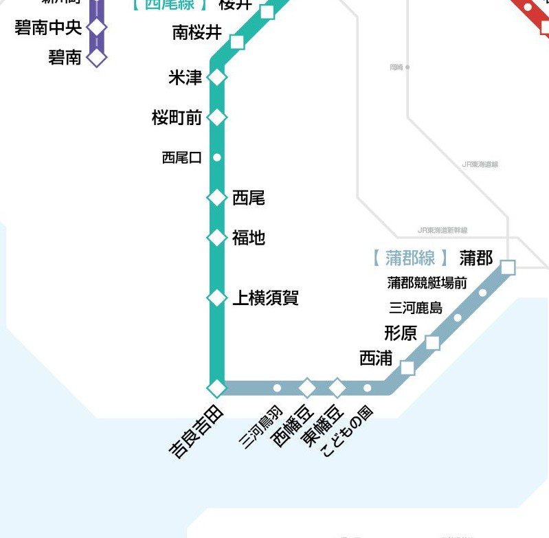
となり結構削られたりしてるのがわかると思います。 なので蒲郡線・・にとどまらず、西尾線までもが廃線の危機に瀕しています。 営業係数（100円の利益を得るためにどれだけの投資が必要かの指数、100以下が黒字、100以上が赤字） でみると、(単体だと不明)西尾・蒲郡だと363.7らしいです。 最新の状態だと2027より15年間分離を行うらしいがどこまで持続するのか・・・。 といった状態であるらしい。
このような感じなので正直明日にでも廃線になっておかしくない路線だと思う。 興味があったら四の五の言ってないでサッサと乗り潰すことを推奨する。
日程？後編
では、現実の話に戻しましょう。意外にも乗客は少ない数おり、片手で数えるには窮屈なくらいにはいた。
なので最後尾に乗り込んで蒲郡まで向かいました。

そして蒲郡に到着しました。
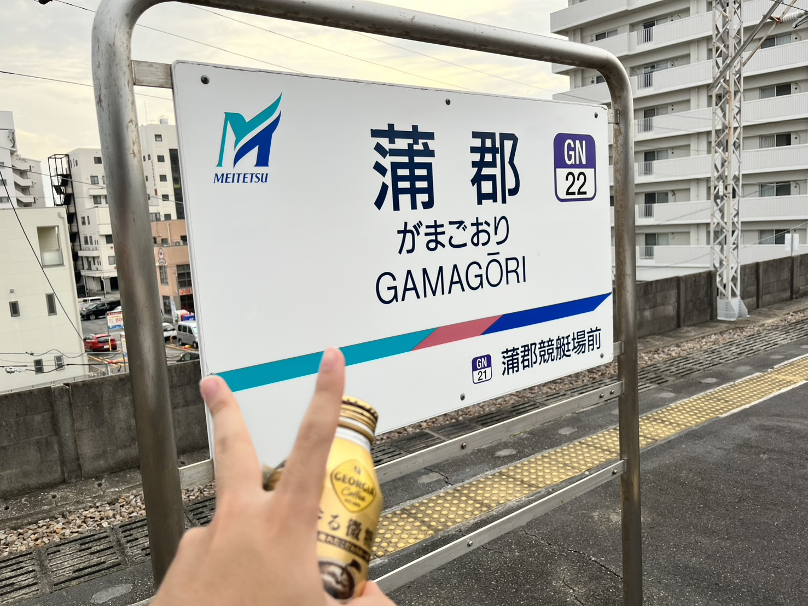
（移りこんでるのは友人） 太田川から出て実に二時間、いやぁ長かった。

で、とくに予定も立ててなかったのでフラフラと海側に向かいました。
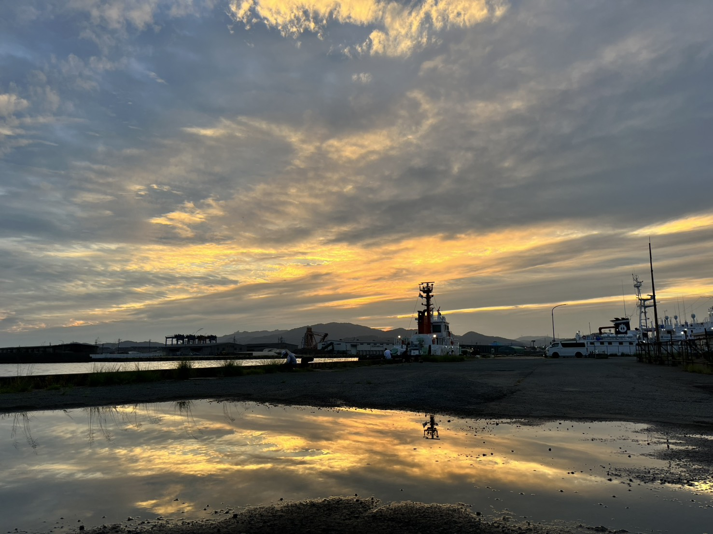
このときはアジパラこと[アジア・名古屋大会]のトライアスロンの会場？らしくそれらの準備とかがされてました。


そんな感じでフラフラしてたらこんな船を見つけました。
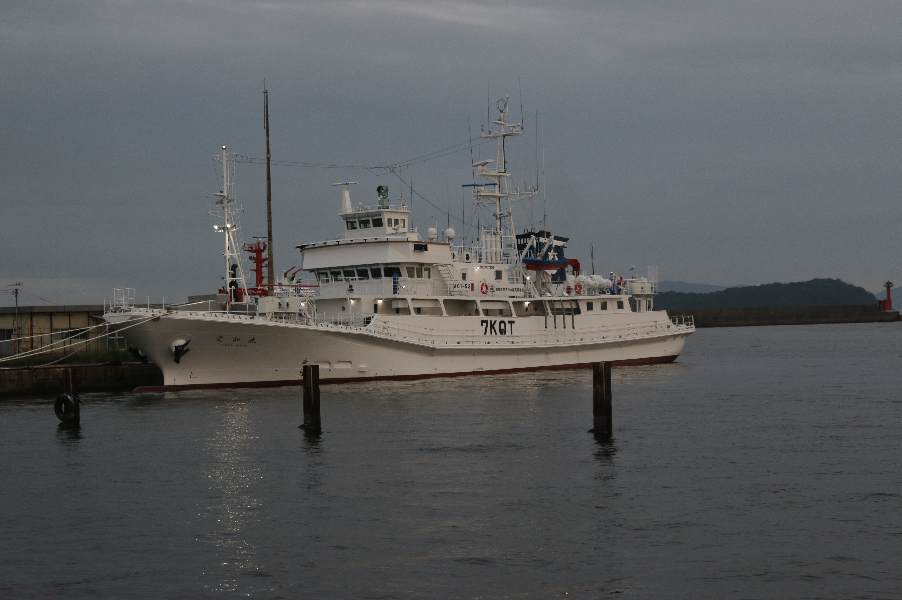
なんかこれ、高校所有の船らしいです。すごいですよねぇ。
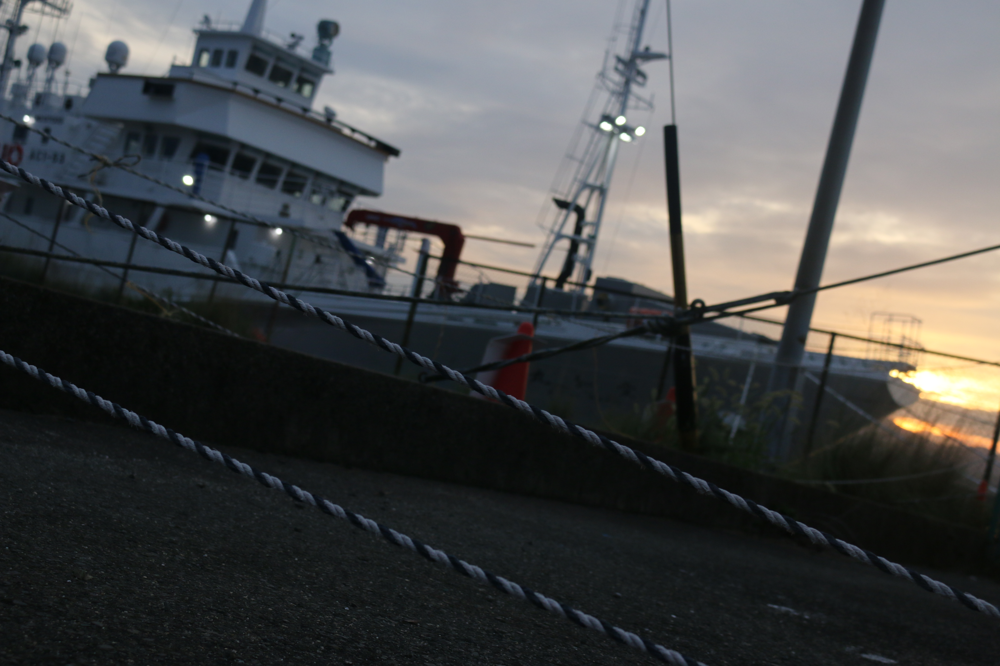
で、そしたらそういや”竹島”って言う神社みたいなのがある島があるんですよね。 なのでそこに行こうとなりました。 歩ける距離にありますからね。結構助かりました。 竹島までは橋が架かってるので24時間通行が可能です。
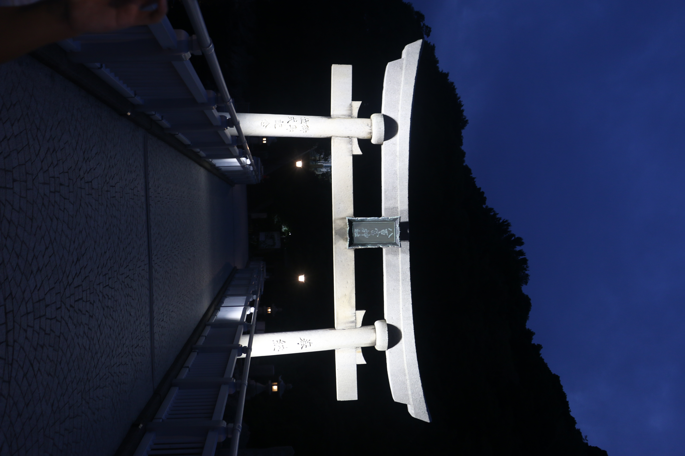
そして本宮に参拝してから島を一周しました。 フナ虫とかいて結構地獄みたいな状況でしたが、 一時間かからずに回れたので結構いい感じだと思います。

そして、時間も時間なんで夜ご飯を蒲郡駅近くのアピタで食べました。 バーギン食べたんですけどおいしいですね。めっちゃ高いけど。 そしてかえりも同じように帰っていきました。

ちなみに無論吉良吉田から名古屋方面の電車乗ってんですけど、全くの無人で面白かったです。
（帰りはICの場合、乗車駅証明書？的なアレで証明し、吉良吉田で回収されるので証明書をお持ち帰りする場合は、 二枚発行しましょう！）
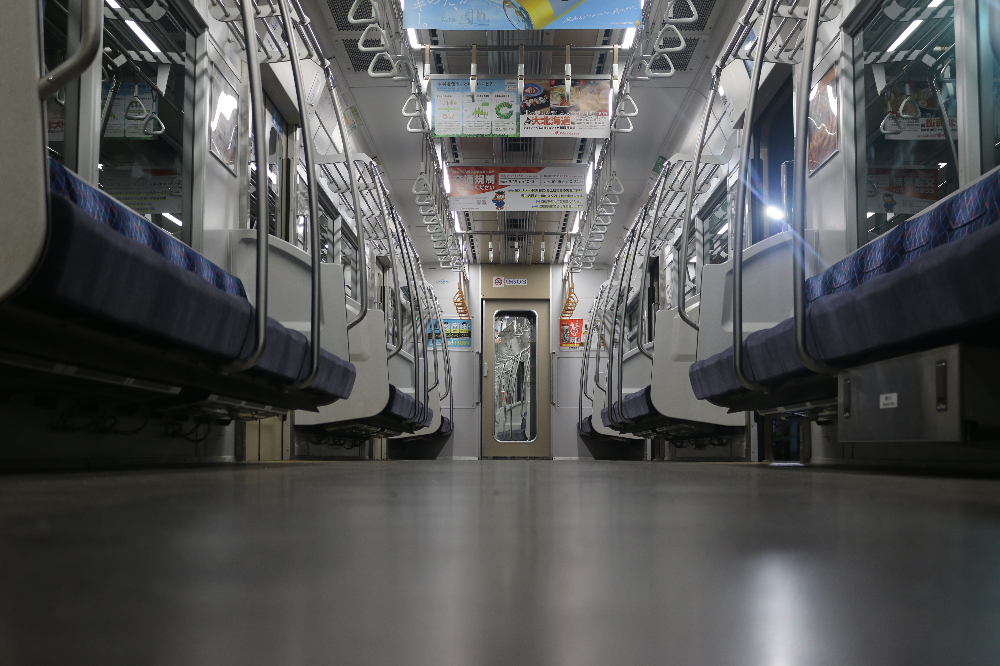
でそんな感じで太田川まで行って解散しました。
まとめ
愛媛とかよりはやっぱり無人駅と言いつつも結構綺麗だったり、
設備がしっかりしてたりとやっぱ大手私鉄は違うんだなぁ・・・。と感じました。
あともう少しで名鉄全線乗り潰せるのでもう一息、頑張りたいですね。
読了したいただき、ありがとうございました。